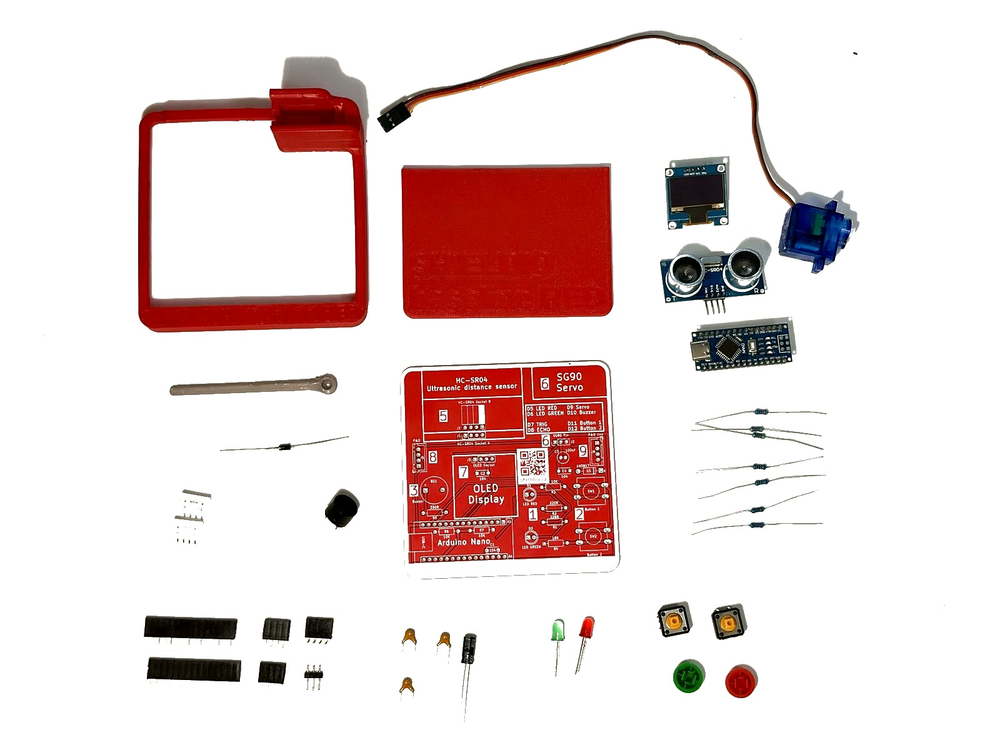
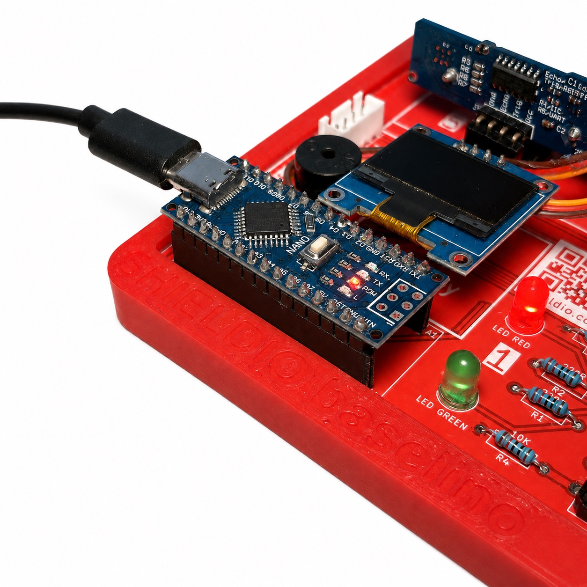
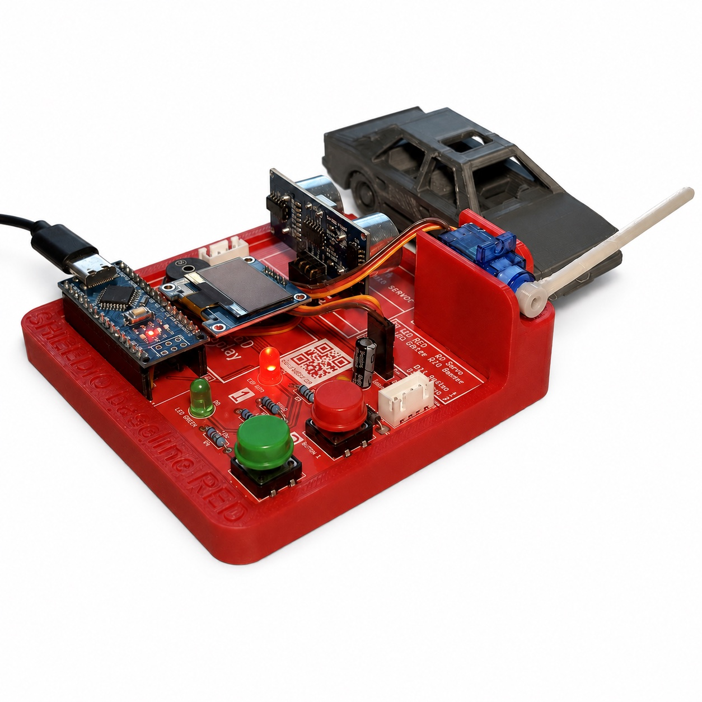
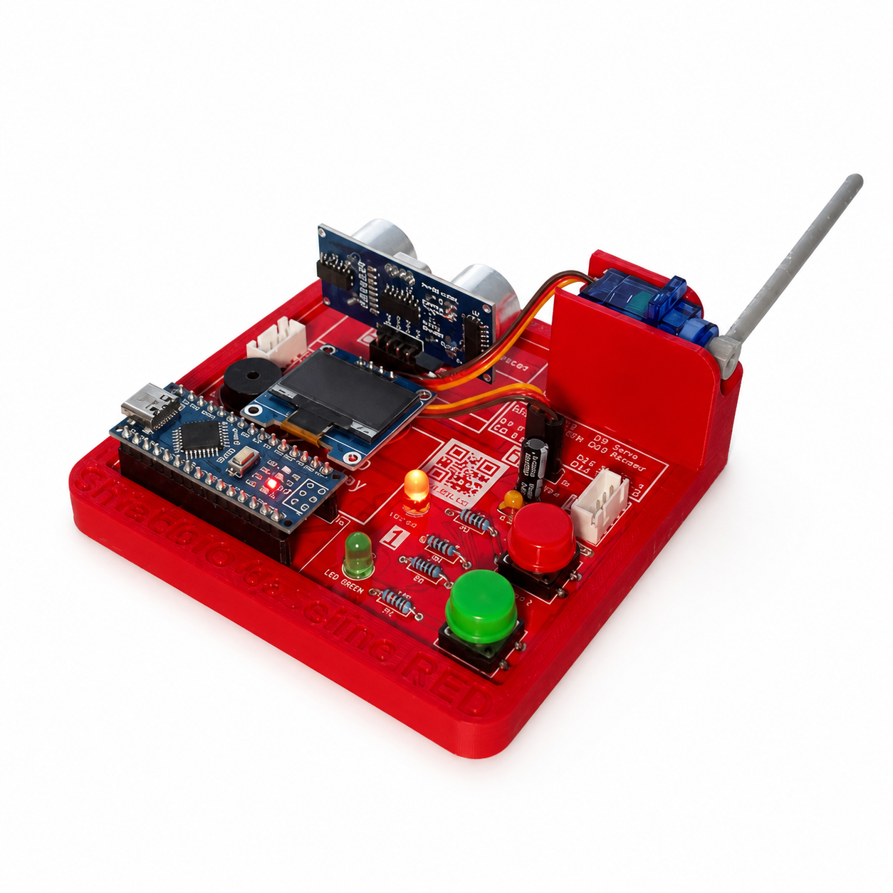
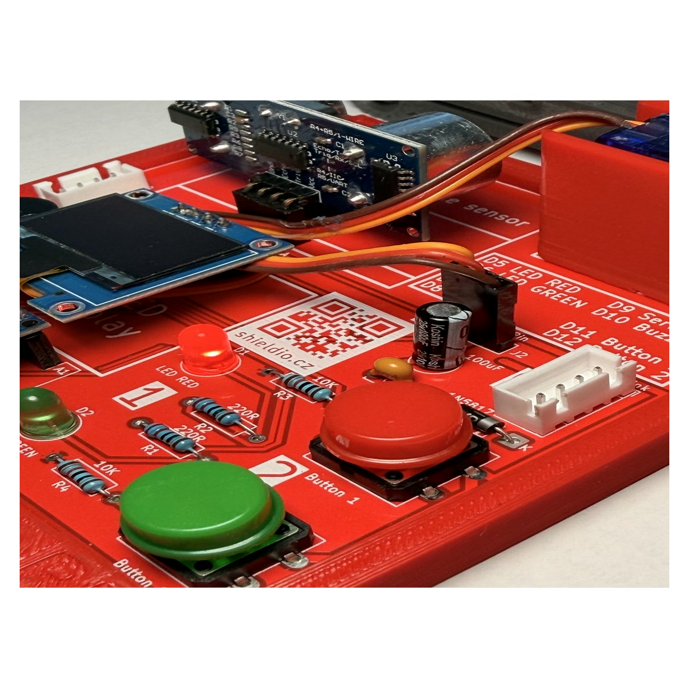

Návody jsou rozdělené podle řady a úrovně, vyber si nejdřív desku a pak konkrétní úroveň, na které pracuješ.

Podrobný fotonávod, jak desku RED sestavit a napájet od nuly, hodí se hlavně pro nesestavenou sadu.
Zobrazit návod
Krok za krokem: jak mBlock otevřít, připojit desku a nahrát první program, pro úplné začátečníky.
Zobrazit návodPoskládej vlastní program z bloků přímo v prohlížeči a vygeneruj Arduino kód pro desku RED, bez psaní v C.
Vyzkoušet
Se sestavenou deskou žáci během jedné 45minutové hodiny naprogramují servo podle vzdálenosti objektu a propojí vstup s výstupem.
Zobrazit návod
Žáci během 20 až 30 minut vyřeší problém s parkováním pomocí ultrazvukového senzoru a pochopí měření vzdálenosti a podmínky.
Zobrazit návod
Žáci během 20 až 30 minut naprogramují časovač, který měří dobu podle pohybu před senzorem, a pochopí práci s časem a podmínkami.
Zobrazit návodŽáci během 20 až 30 minut vytvoří bezdotykový hudební nástroj, který podle vzdálenosti ruky mění výšku tónu, a pochopí mapování hodnot mezi vstupem a výstupem.
Zobrazit návodPracujeme na sadě návodů pro desku Green. Mrkni prosím zpátky později.
Pracujeme na sadě návodů pro desku Yellow. Mrkni prosím zpátky později.
Deska PROline zatím není v prodeji, návody přidáme, jakmile bude.
Návody drží stejnou strukturu napříč úrovněmi: co budeš potřebovat, jak to zapojit, a jeden zdokumentovaný projekt jako výchozí bod pro vlastní úpravy.
Upravitelný metodický list k projektu Automatická závora: cíle, vazba na RVP ZV 2025, dvě časové varianty, pracovní list a hodnoticí rubrika. Před použitím jej přizpůsobte ŠVP a podmínkám školy.
Ať už chcete vědět, kdy budou desky k dostání, hledáte stavebnici pro kroužek, nebo domlouváte ukázkovou hodinu pro školu, ozveme se s odpovědí nebo termínem.
Ozveme se do dvou pracovních dnů.